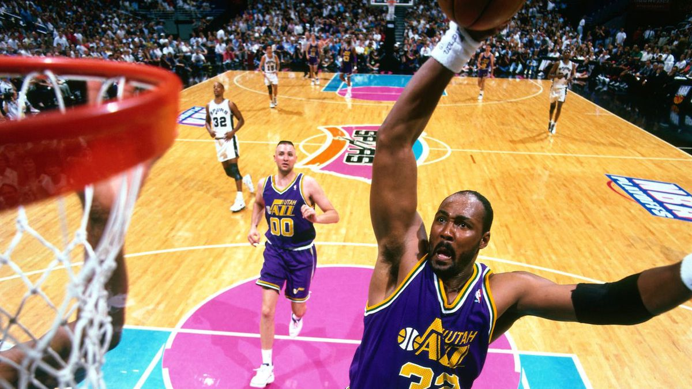
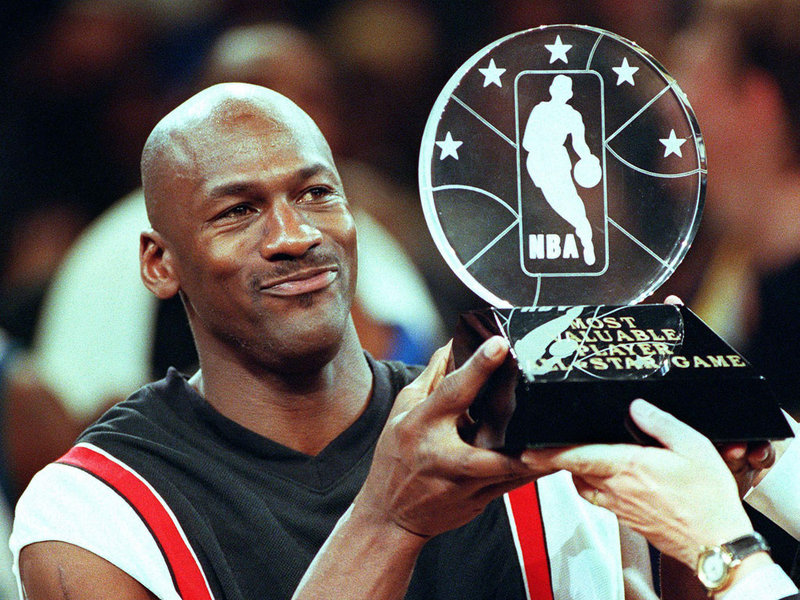

Kareem Abdul-Jabbar a fost un jucator foarte valoros al echipei Los Angeles Lakers.El a avut un sezon cu o medie de 58.5 puncte pe meci,o medie care inca este recordul in NBA*. El a purtat numarul 33. El a si-a ajutat echipa de pe pozitia 3.
Karl Malone este un jucator care si-a inceput cariera la Jazz si si-a terminato la Los Angeles Lakers.El a avut nr. 32.El si-a ajutat ambele echipe de pe pozi
Si am ajuns si la locul 3.El este Michael Jordan.pe langa caci este locul 3 la marcatorii din NBA* el este si cel mai bun jucator din NBA*. El si-a inceput cariera la Chicago Bulls cu numarul 23 si a revenit dupa 12 ani de cariea dintre care 10 au fost la Chicago si 2 la Washington D.C. inapoi la Chicago Bulls cu numarul 45.Michael Jordan a fost si va fi cel mai bun jucator de baschet.